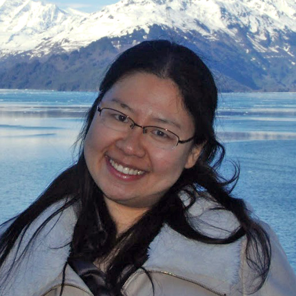

Near-field cosmologist · observer · instrument builder
Assistant Professor, Department of Astronomy & Astrophysics
Associated Faculty, Dunlap Institute · University of Toronto

I study the stars of the Milky Way and its neighbouring galaxies to learn how galaxies form and to probe the nature of dark matter. I am a traditional observational astrophysicist immersed in modern sky surveys with petabytes of data, using deep targeted follow-up observations to leverage large-scale cosmic surveys. I also build the instruments behind the science — from hardware for DESI to next-generation spectrographs under development in my lab at Toronto. To date I have spent over 300 nights on optical telescopes around the world.
Before joining Toronto in 2021, I was the 2019 NASA Hubble Fellowship Program Einstein Fellow at Carnegie Observatories, with a joint appointment at Princeton University as a Carnegie–Princeton Fellow, and before that a Leon Lederman Fellow at the Fermilab Center for Particle Astrophysics. I earned my PhD at Texas A&M University, was an Erasmus Mundus scholar in the SpaceMaster joint European master's program (living in Germany, Sweden, France, and Japan), and completed my undergraduate degree in physics — with a minor in diplomacy — at Fudan University in Shanghai.
What I work on
Mapping the disrupted clusters and galaxies that trace the Milky Way's mass and history — the science behind the Southern Stellar Stream Spectroscopic Survey (S5).
Using the faintest satellite galaxies as laboratories for the particle nature of dark matter and the smallest scales of galaxy formation.
Turning imaging and spectroscopic surveys like DES, DESI, and LSST into chemo-dynamical maps of millions of stars across the Galactic halo.
From DESI's focus-and-alignment system to next-generation multi-object and ELT-class instruments developed in my lab at Toronto.
Opportunities
I welcome undergraduates, prospective graduate students, and postdoctoral fellowship applicants — my group currently counts more than thirty members across all career stages. Everything you need to know — programs, routes, and how to reach out — is on one page.
In the news